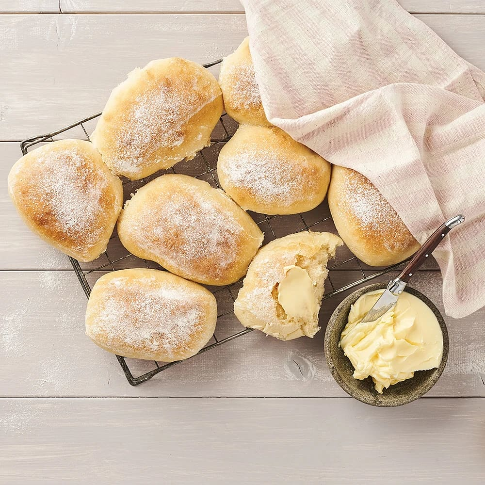

Vetefrallor

225°C. Jästid 90 minuter. Total baktid 2 timmar. Blir ungefär 10 frallor.
Recept:
- 12,5 gram blå jäst
- 4 dl vatten, fingervarmt
- 1 msk honung
- 1 tsk salt
- 8-9 dl vetemjöl
Instruktioner:
- 1. Lös upp jästen i vatten och lägg till honung och salt.
- 2. Tillsätt lite vetemjöl i taget tills degen är lite rinnig.
- 3. Sätt plastfolie på bunken och låt degen jäsa.
- 4. 30 minuter rör om degen och vik in den i sig själv. Låt jäsa 30 minuter till.
- 5. Efter en timmes jäsning: Dela upp degen till frallor på mjölat bord.
- 6. Lägg på plåt och låt jäsa 25 minuter till.
- 7. Sätt ugnen på 225°C på under- och över värme
- 8. Grädda i mitten av ugnen i 15 minuter.
Timer
15:00
Till startsidan